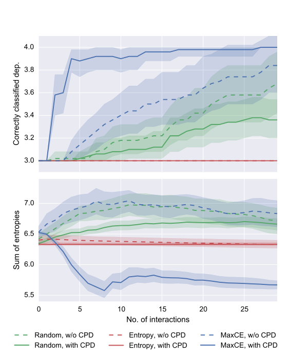
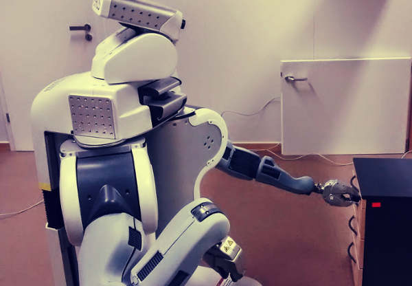

Joint Movement
When the robot moves a joint it records its position in joint space. From this no clues are visible.
Johannes Kulick
Stefan Otte
Marc Toussaint
Johannes Kulick $\cdot$ Stefan Otte $\cdot$ Marc Toussaint
Machine Learning and Robotics Lab $\cdot$ University of Stuttgart
International Conference on Robotics and Automation, 2015 $\cdot$ Seattle, Washington
Joints are all around us in modern human-made environments. We call them dependent joints if the position of one joint changes the ability of another joint to move. E.g. the position of the window handle determines whether one can open the window or not. Robots need to be able to find out about these dependencies and manipulate them.
A lot of these joints are provided with mechanical, audible, or other clues to guide its usage. These changes in some sensible domain robots should learn to use. How can we make robots perceive these change points?
When the robot moves a joint it records its position in joint space. From this no clues are visible.
The PR2 has a force sensor at its wrist. We use it to capture a force profile of the actuated joint. There are many changes visible, but it is not clear, which are due to the joint's feedback and which come from the control.

$\Delta v = \sqrt{v^2-c_f v \Delta t}$
| Name | Description |
|---|---|
| $v$ | Velocity |
| $c_f$ | Virtual friction constant |
| $\Delta t$ | Time difference between two steps |
Using a motion and dynamics model we can compute the virtual friction constant for each time step. Here it is very apparent where the change points in the temporal development are.
The Bayesian change point detection we use agrees. The probability for change points is clearly correlated with the changes we anticipated.
| Symbol | Description | Domain |
|---|---|---|
| $N$ | Number of joints | $\mathbb{N}$ |
| $M^{j}$ | Maximum joint angle of joint $j$ | $\mathbb{R}$ |
| $t, s, u, v$ | Index for time | $\mathbb{N}$ |
| $j$ | Index for joints | $\{1, \dots, N\}$ |
| $D^{j}$ | RV, dependency of joint $j$ | $\{1, \ldots, N+1\}$ |
| $L^{j}_{t}$ | RV, locking state of joint $j$ | $\{0, 1\}$ |
| $Q^{j}_{t}$ | RV, joint state/position of joint $j$ at time $t$ | $\mathbb{R}$ |
| $F^{j}_{t}$ | RV, force/torque measurements of joint $j$ at time $t$ | $\mathbb{R}$ |
| $C^{j}_{t}$ | RV, change points of joint $j$ at time $t$ | $\{0, 1\}$ |
| $S^{j}_{p}$ | RV, segment borders of joint $j$ at position $p$ | $\{0, 1\}$ |
We model the dependency structure with a graphical model capturing our insights and prior knowledge about how joints are used in human environments. Observing the force signal or the position of the joints we can infer various other things: How likely is a joint locked? How likely are two joint positions in the same segment? And most import how likely locks one joint another?
With the probabilistic model we can now use methods
from active learning and Bayesian experimental design to
choose points to explore optimally.
We want to choose points where our belief over the
dependency structure changes most. Thus we will quickly
converge to a correct belief over the dependency
structure of the involved joints. We use the MaxCE
method, that maximizes the expected cross entropy before
and after adding an observation:
$ \DeclareMathOperator*{\argmax}{argmax} ({Q^{1:N}_{t+1}}^*, j) = \argmax\limits_{(Q^{1:N}_{t+1}, j)} \sum_{L^{j}_{t+1}} \underbrace{P\left(L^{j}_{t+1}|Q^{1:N}_{t+1}, S^{1:N}\right)}_{\text{joint $j$ locked in the next state}}~\cdot \underbrace{H\left[ P_{D^j_{t}};P_{D^j_{t+1}} \right]}_{\text{Cross entropy}}$
with
$P_{D^j_{t}} = P(D^{j}|L^{j}_{1:t}, Q^{1:N}_{1:t},
S^{1:N})$
$P_{D^j_{t+1}} = P(D^{j}|L^{j}_{1:t+1}, Q^{1:N}_{1:t+1},
S^{1:N}).$
We let our PR2 uncover the dependency between a key and the drawer it locks. We did the same with a couple of furniture in simulation.
The results show that our method uncovers the dependency quite quickly and better than all other tested methods. Our intuition that change points in the environment help to find out the structure was indeed correct. Even for simple dependencies it took the robot much longer to uncover it without the help of change points.
Also the uncertainty over the results is much lower with the use of change points. The change points in fact almost distcretize the space, such that much less observations are needed to cover the whole space.
